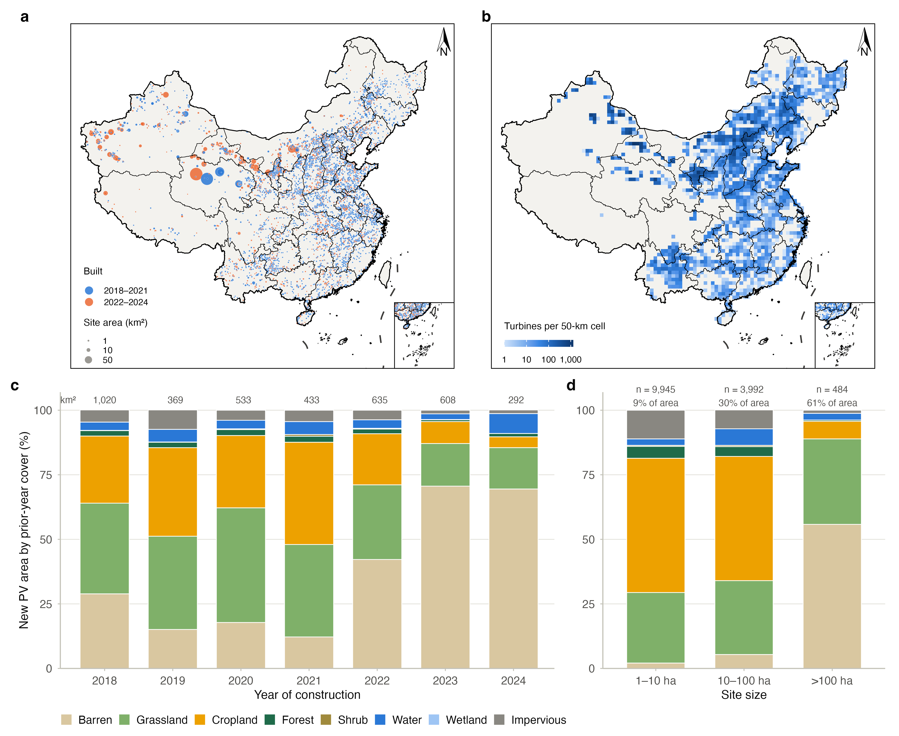
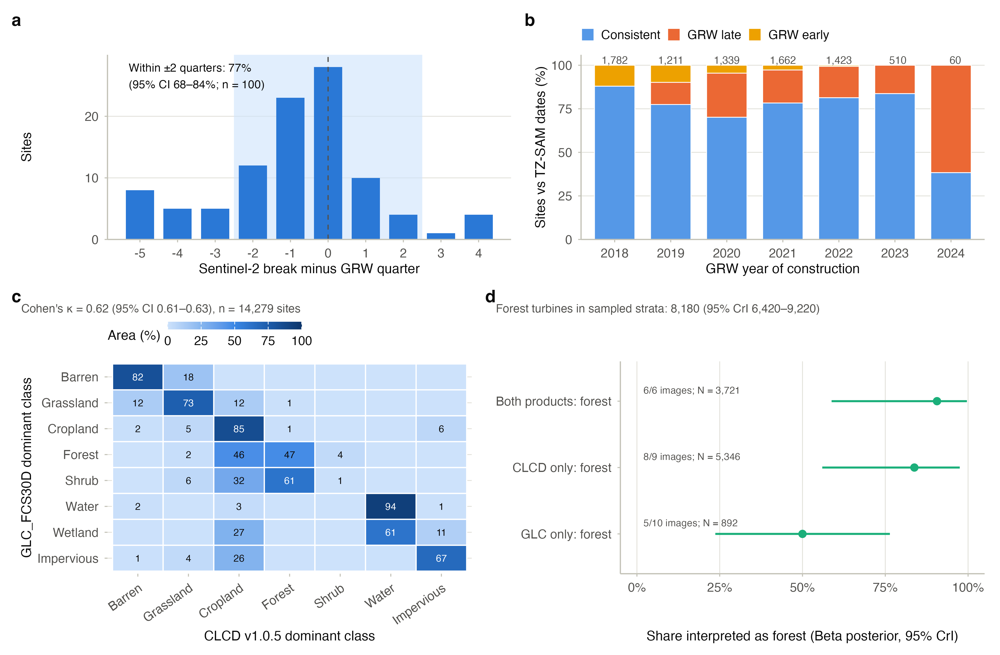
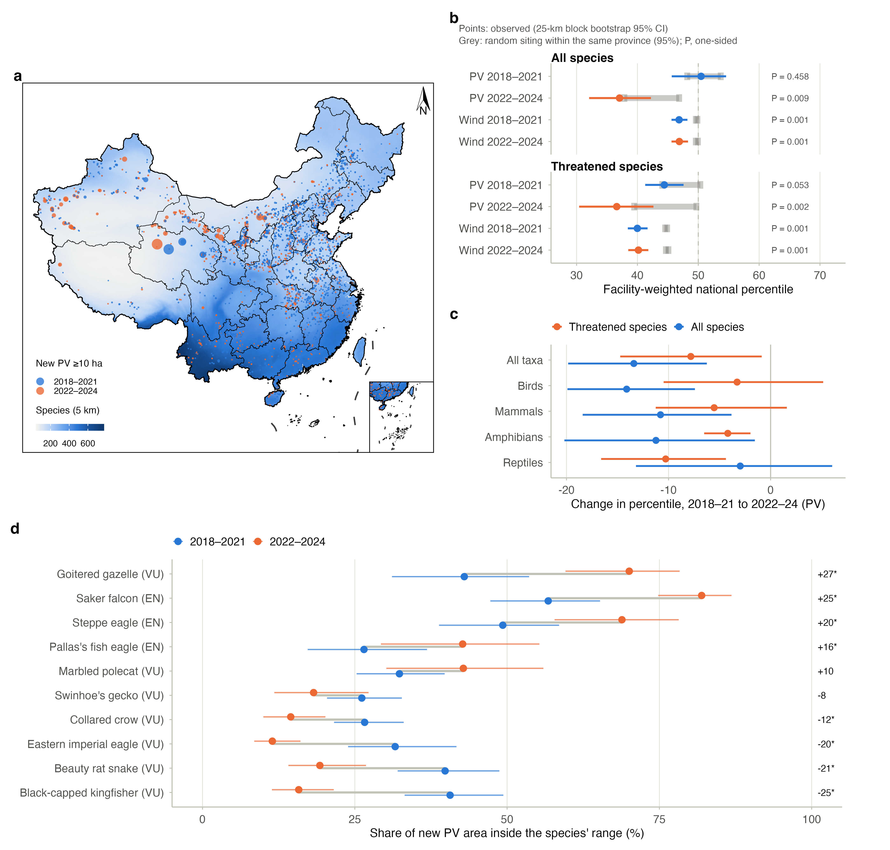
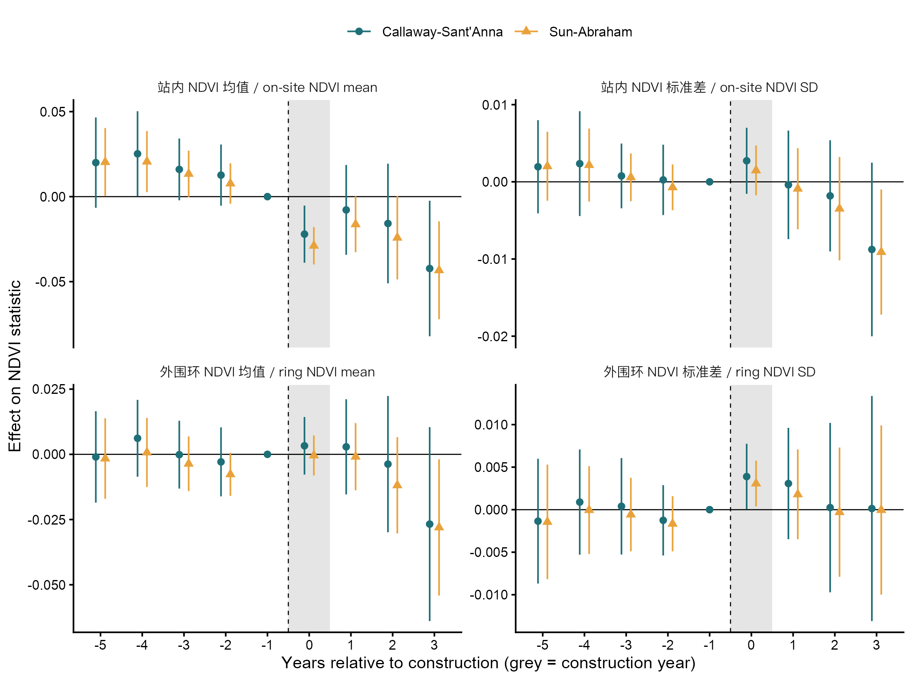
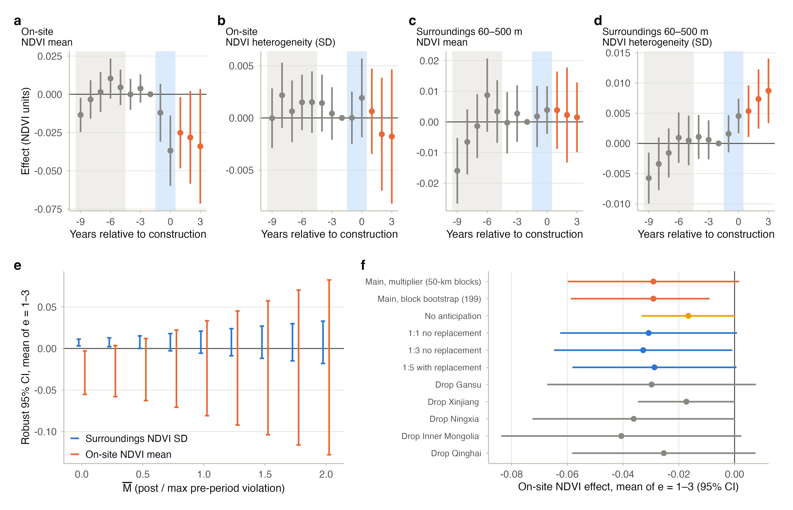
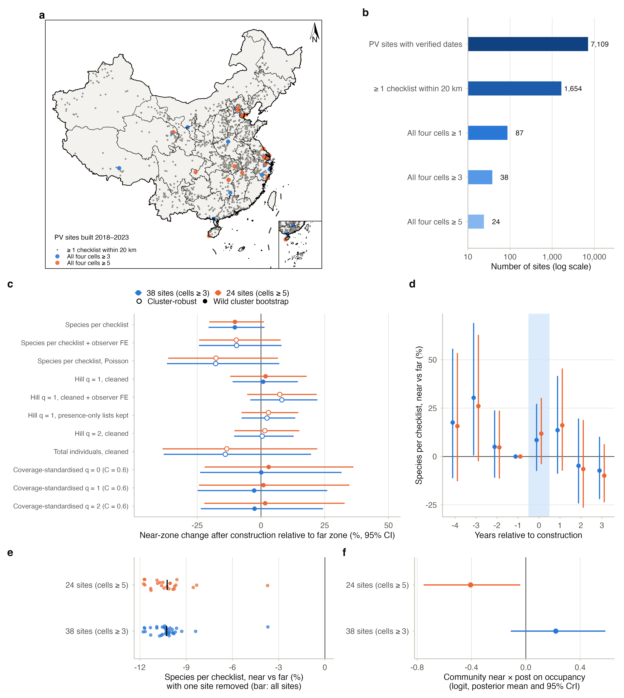

为什么做这件事
重分析 Zhang 等(2026)那篇 Science 时,我一直在想:如果不用县级政策指数和观鸟香农指数,而是直接看每个电站建在哪、建完以后发生了什么,结论会不会不一样?Global Renewables Watch 的季度建设日期让这个问题变得可以回答。光伏让绿度怎么变,Li 等(2024)已经做过全国 30 m 的评估,所以我不打算在绿度本身上做文章,而是把力气放在因果对照、生境异质性、风电和物种暴露上,并拿结果去对照 Zhou 等(2026, NEE)的规划情景。
Global Renewables Watch 给全球每个光伏电站和陆上风机都标了季度精度的建设日期。
有了它,"早建对晚建"的交错双重差分才第一次能在全国尺度上做。
和已有工作的关系
Science 那篇是事后评估,但暴露和结局都没测准;NEE 那篇尺度合适,讲的却是规划情景下的潜在冲突。两者之间正好空着一块:已经建成的设施,实际造成了什么。
| Zhang 等 2026 · Science | Zhou…Li 2026 · Nat. Ecol. Evol. | 我的设计 | |
|---|---|---|---|
| 时间视角 | 事后,2014–2023 | 事前,情景至 2060 | 事后,2017Q4–2024Q2,可回溯至 2010 |
| 暴露 | 县级政策强度指数;县内不预测实际光伏面积 | 规划情景下的潜在选址 | 遥感识别的真实足迹 + 季度建设日期 |
| 结局 | 县-月观鸟香农指数,由观测努力主导 | 与物种分布和保护优先区的重叠 | 栖息地状况遥感指标 + 物种暴露 + 结构化监测 |
| 尺度 | 县 | 全国栅格 | 站点及外围距离环 |
| 因果识别 | 双向固定效应,存在预趋势 | 不涉及,情景比较 | 交错 DiD,晚建站点作对照 |
国内的光伏遥感研究做到了哪一步
| 研究 | 样本与方法 | 主要发现 | 还没回答的 |
|---|---|---|---|
| Li X. 等 2024 Renewable Energy [16] | 全国光伏图 × 30 m 植被指数;区分建设期与运行期 | 建设期绿度显著下降,森林降幅最大、裸地最小;中小型站点负效应更强(多建在高绿度处);运行期绿度普遍回升,裸地最明显;约 21% 的站点超过建设前水平 | 结局只有绿度;前后比较未设未建对照,区域性变绿与气候趋势难以剥离 |
| Li Y. 等 2026 Environ. Res. Commun. [17] | 57 个光伏站,"空间-时间"法;EVI、FVC、NPP、土壤水分、气温 | 湿润与半湿润区耕地负响应最强(ΔEVI −0.03,ΔFVC −2.7%),草地负响应较弱;裸地 FVC 与 NPP 小幅上升并伴随土壤水分增加;夜间增温为主,草地最强;耕地负响应可能源于遮光 | 站点少;未涉及物种与异质性;未覆盖风电 |
| 彭昀月 等 2024 《生物多样性》 [18] | 集中式光伏与风电生态影响综述 | 光伏主要改变土壤、植被与栖息地质量,旱区可降温增湿、固沙;风电集中于植被扰动、鸟类撞击与生境破碎化;机制与生态系统层面研究不足 | 作者呼吁统一调查方法、补物种和生态系统层面的研究,这正是 M3–M5 要做的 |
| 征求意见稿 [19] | 《中国可再生能源与生物多样性协同发展的机遇与挑战》 | 政策语境:协同发展已进入政策讨论 | 发布机构与正式版待核实;仅作背景,不引用具体结论 |
我手上的证据
我把读到的东西分成三类:有出处的、我自己推出来的、还没核实的。立论只用第一类。
有出处
- NEE:全国集中选址与丰富度优先区冲突低 4–7%,平均重叠物种少 11–33%;但与功能多样性和开阔/干旱生物群区冲突更大;分散选址更多重叠小分布区森林物种 [1]
- GRW:光伏多边形与风机点位,季度建设日期,PlanetScope 4.7 米 [3]
- 光伏遥感研究普遍报告"变绿",但空间异质且受气候混杂 [6, 7]
- 青海荒漠野外:板下生物量增加,物种丰富度与香农指数显著下降 [8]
- 内蒙古风电场:夜间增温、生产力下降 [9]
- 全国 30 m:建设期绿度下降,森林最大、裸地最小;中小站点更强;运行期回升,约 21% 超过建设前 [16]
- 57 站:湿润区耕地负响应最强,裸地 FVC、NPP 小幅上升且土壤水分增加;夜间增温为主 [17]
我的推断
- 大型基地向荒漠、戈壁集中,而那里恰是公民科学数据最稀疏、NEE 预测功能多样性冲突最大的地方
- "劣质绿化"若存在,应表现为绿度上升、异质性下降;站点尺度可检验,县级 MODIS 不可检验
- [16][17] 的方向差异提示效应由原生境与干旱度共同调节:旱区以土壤水分增益为主,湿润区以遮光为主。两种机制可用土壤水分与板间/板下对比区分
- 中小站点负效应更强,可能是选址的混杂(建在高绿度处),而非规模本身;需在匹配中控制建设前绿度
还没核实
- GRW 建设日期的第二人独立目视复核(第一轮与 TZ-SAM 一致约 80%,见 G1)
- 有没有人已经用建设日期做过全国风电的反事实研究(我没检索到,但不等于没有)
- [16] 怎么划分"建设期"和"运行期",有没有对照组(要读全文)
- 征求意见稿 [19] 的发布机构、日期与正式版
- China BON-Birds 的获取途径
- NEE 情景空间图层能否获取
研究问题和三个假说
H1 生境置换
建设吃掉自然生境,站点和周边的生境状况变差,越远影响越小。H2 中性或改善
站点多建在退化地、裸地或农田上,板下遮荫增湿反而变绿,谈不上生境损失。裸地站点运行期绿度回升、土壤水分增加 [16, 17],算是支持这一条的证据。H3 同质化
绿度上去了,结构和光谱异质性却下来了,生境质量的损失被 NDVI 掩盖住。怎么区分这三个假说
只看绿度分不开 H2 和 H3,所以我在同一批站点上同时估计绿度和异质性。
| 预测(自然生境站点,建设后) | 绿度 NDVI / GPP | 异质性 Rao's Q / 纹理 | 夜间地表温度 |
|---|---|---|---|
| H1 生境置换 | ↓ | ↓ | ↑ |
| H2 中性或改善 | 0 或 ↑ | 0 | 0 |
| H3 同质化 | ↑ | ↓ | ± |
为什么要看异质性
青海荒漠的野外调查发现,板下生物量增加了,物种丰富度和香农指数却明显下降。只看绿度的话,这种情况会被当成 H2。什么结果能推翻它们
裸地上 H2 已经有证据,所以我关心两件事:裸地站点变绿时异质性有没有跟着下降(H3 还是 H2),森林和湿润区耕地站点的下降在有未建对照时还站不站得住(H1)。如果预趋势平坦、功效也够,而自然生境站点的各项指标建设后都和零没差别,H1 就不成立;如果变绿的地方异质性没降,H3 就不成立。我想挑战三个常见的默认看法:遥感上变绿就是生态变好,荒漠是代价最低的选址,政策强度可以代表生态暴露。
工作分成七块
从 M0 到 M6,每一块做完都要交出具体结果,不过关就回头改。
准备与治理
GEE 注册、数据协议、预注册
设施清单
GRW + 中国光伏专题 + GEM 容量状态
转换与暴露
建设前生境、AOH 物种暴露、对照 NEE
因果效应
交错 DiD、距离环、晚建对照
机制
绿度 vs 异质性
生物学响应
BON 样线、努力校正占域
综合
真实 vs 规划、荒漠专题
各模块怎么做
M0 准备与数据治理
- GEE 非商业项目 renewable-conservation 已经注册好;在国内跑脚本要走代理才能连上 googleapis
- China BON-Birds、保护地边界、生态保护红线这几类数据要靠合作或授权;记录级观鸟数据我不会再分发
- 准备联系 NEE 作者组要情景图层
- 主结局、对照规则、距离环和功效门槛在看结果之前就定下来
M1 设施清单与建设日期
- 主数据:GRW,筛选
COUNTRY = 'China',保留construction_year与construction_quarter;2017 年一律为第 4 季度,是影像起点前已存在站点的左删失,不能当作建设时间 - 补 2018 年前:中国 2015/2020 矢量光伏数据集的建设年份字段;农光互补 2010–2022
- 容量与状态:Global Energy Monitor 追踪库;"已宣布未建"站点是天然反事实候选
- 交叉验证:光伏用 TZ-SAM 的建设时间上下界校验 GRW 季度日期;风电用 GonshoreWT2024 与中国 2023 年风机图校验点位与覆盖
- 随机抽 100–200 个站,在哨兵-2 时序上核对建设季度
M2 生境转换与物种暴露
- 以建设前一年年度土地覆盖为基线:CLCD v1.0.5(1985–2025,中国专题)与 GLC_FCS30D 并用;两者对森林、灌丛、耕地的划分分歧大,涉及森林的结论报告两者区间并以高分影像抽样定标 [20]
- 按生境类型、生物气候区、海拔带统计占用面积
- 先用 BirdLife 和 IUCN 分布图做物种暴露(已完成,见"物种暴露"一节),再按生境偏好和海拔裁成 Area of Habitat
- 用和 NEE 相同的指标算真实选址的冲突,看它更接近哪个情景
- WDPA 对中国保护地收录不全,我改用中国自然保护区边界数据
M3 栖息地状况的因果效应
- 结局:NDVI、EVI、GPP;Rao's Q、GLCM 纹理;昼夜地表温度、蒸散、土壤水分;景观破碎度
- Callaway–Sant'Anna 与 Sun–Abraham 互证;晚建站点作对照;CEM 匹配从未建设的点
- 匹配变量:光伏潜力或风速(选址按它挑)、坡度、海拔、距道路/电网/居民点、建设前土地覆盖与绿度趋势
- 稳健性:事件研究预趋势;HonestDiD;ERA5-Land 气候协变量;站点聚类或 Conley 标准误;按生境、干旱度、设施类型分层
- 预设调节变量(来自 [16, 17]):建设前土地覆盖、干旱指数、站点面积等级;面积效应需在控制建设前绿度后再解释
M4 机制:变绿还是同质化
- 在同一批站点上分别做绿度和异质性的事件研究,直接检验 H3
- 光学遥感看不见面板底下的植被,所以板间和外围用遥感,板下只能靠野外样方补,这一点要在文中写清楚
- 区分两条通路 [17]:旱区"遮荫增湿"(土壤水分 ↑、绿度 ↑)与湿润区"遮光限制"(土壤水分不变、绿度 ↓);用 ERA5-Land 或 SMAP 土壤水分与夜间地表温度共同判别
M5 生物学响应
- China BON-Birds 的样线如果靠近设施,就做 BACI 比较
- 公民科学:只用完整清单,保留时长、距离、人数;合并同日同点多人清单以去伪重复;"计数全为 1"清单剔除或单独建模
- 多物种占域模型估计"距离 × 建设后"的交互,不再聚合到县;动手之前先算功效
M6 综合
主图想回答一个问题:真实选址的冲突落在 NEE 两个情景之间的什么位置。另做一个荒漠专题,看扩张最快的地方是不是也正好是数据最少的地方。落到政策上,我倾向于认为选址规则要同时管住丰富度和功能多样性,也要同时顾及森林和干旱生物群区。数据从哪里来
下表的 GEE 数据集我在 2026-10-20 逐个在线试过,都能读到。
Google Earth Engine
| 用途 | 数据集 | GEE ID / 说明页 |
|---|---|---|
| 设施与建设日期 | Global Renewables Watch v1(光伏多边形、风机点位;字段 COUNTRY、construction_year、construction_quarter、area、landcover_in_2018) | projects/sat-io/open-datasets/GRW/SOLAR_V1projects/sat-io/open-datasets/GRW/WIND_V1说明页 |
| 光伏建设时间互校 | TransitionZero Solar Asset Mapper(TZ-SAM,季度更新;>500 kW;建设时间字段在 GEE 中截断为 construc_1/constructe,容量为 capacity_m;无国家字段,需用国界空间筛选;CC BY-NC 4.0) | projects/sat-io/open-datasets/TZERO/TZ-SOLAR-2025Q1_ANALYSIS_POLYGONS(后续季度替换版本号)说明页 |
| 风电场交叉验证 | Dunnett 等协调化全球风电场位置 | projects/sat-io/open-datasets/global_wind_farms_2020说明页 |
| 年度土地覆盖 | GLC_FCS30D,1985–2022,30 m | projects/sat-io/open-datasets/GLC-FCS30D/annual说明页 |
| 10 m 土地覆盖 | Dynamic World;ESA WorldCover;ESRI 10 m LULC 2017–2025 | GOOGLE/DYNAMICWORLD/V1 · ESA/WorldCover/v200 · projects/sat-io/open-datasets/landcover/ESRI_Global-LULC_10m_TS |
| 光学影像 | Sentinel-2 SR;Landsat 8/9 Collection 2 L2 | COPERNICUS/S2_SR_HARMONIZED · LANDSAT/LC08/C02/T1_L2 · LANDSAT/LC09/C02/T1_L2 |
| 地表温度与植被指数 | MODIS LST 8 天;MODIS 植被指数 16 天 | MODIS/061/MOD11A2 · MODIS/061/MOD13Q1 |
| 气候协变量 | ERA5-Land | ECMWF/ERA5_LAND/HOURLY |
| 资源潜力(匹配) | Global Solar Atlas PVOUT;Global Wind Atlas 风速 | projects/sat-io/open-datasets/global_solar_atlas/pvout_LTAy_AvgDailyTotalsprojects/sat-io/open-datasets/global_wind_atlas/wind-speed |
| 保护地 | WDPA(对中国覆盖不全) | WCMC/WDPA/current/polygons |
| 人类改造 | TNC Global Human Modification v3 | TNC/HM/v3/300m_c |
| 冠层高度 | GLAD GEDI-Landsat 冠层高度 | projects/sat-io/open-datasets/GLAD/GEDI_V27 |
另外试过能用的还有:MODIS GPP MODIS/061/MOD17A2HGF、蒸散 MODIS/061/MOD16A2GF、ERA5-Land 月聚合 ECMWF/ERA5_LAND/MONTHLY_AGGR。
GEE 之外
| 数据 | 内容 | 获取方式 |
|---|---|---|
| 中国光伏专题 | 2015/2020 矢量(含建设年份)[链接];2020 年 10 m [链接];CPVPD-2024 [链接];农光互补 2010–2022 [链接] | 各论文的数据仓库,公开下载 |
| 全球陆上风机 2024 | GonshoreWT2024:全球 416,532 台陆上风机,多源影像与混合学习识别(ESSD 2026)[链接] | Zenodo 公开下载;是否含建设年份需查数据说明 |
| 中国风机 2023 | Sentinel-2 识别中国 148,181 台陆上与 7,541 台海上风机(Renew. Sustain. Energy Rev. 2025)[链接] | 按论文数据声明获取;属性字段待核实 |
| 中国光伏 2010–2022 | Chen, Zhou, Ge, Dong(2024)深度学习识别的光伏多边形,含建设日期 | 按论文数据声明或联系作者;期刊与仓库待核实 |
| CLCD v1.0.5 | 中国逐年 30 m 土地覆盖,1985–2025,9 类;Landsat Collection 2 更新,Cloud Optimized GeoTIFF(Albers 投影),CC BY 4.0 [20] | Zenodo 10.5281/zenodo.18180184;每年全国一幅约 0.8 GB,另有分省包。我下载了 2017–2023 年 7 幅(约 5.7 GB)在本地统计 |
| Global Energy Monitor | 光伏与风电站点、装机容量、宣布/在建/运行状态 | globalenergymonitor.org 申请下载,核对许可 |
| 物种分布 | IUCN 红色名录分布图(兽类、两栖、爬行);BirdLife BOTW 2025 鸟类分布图 | IUCN 空间数据;BirdLife DataZone 申请;不得再分发 |
| China BON-Birds | 31 省 338 样区,1,822 条样线、1,343 个样点 [链接] | 无公开门户,需通过合作接洽 |
| 公民科学 | eBird EBD(含努力字段);中国观鸟记录中心记录级数据 | eBird 数据申请;观鸟中心按平台条款;不再分发 |
| NEE 情景图层 | 全国集中与省级分散两种选址情景 | 查论文数据可用性声明,或联系作者组 |
几道关口
这几道关口是看结果之前定的。哪一道过不了,就按右边的办法调整后重跑。
两周试点
G1 和 G2 都过了,才铺到全国。
已完成
已完成:自动断点 77%,目视复核 23 站,TZ-SAM 79.6%
已完成,并加做了匹配从未建设点的版本(见下文)
还没做:看 MODIS 夜间地表温度,判断风电部分是否可行
继续、调整还是放弃
这一轮复核改了什么
把前面几部分从头到尾又核了一遍,主要查三件事:每个数有没有不确定性,推断有没有把空间相关和少聚类算进去,点估计的结论换个设定还在不在。下面这张表是改动清单。有两处结论因此变弱,我在对应的地方直接改了,没有保留旧说法。
| 环节 | 上一版 | 问题 | 现在的做法 | 结论有没有变 |
|---|---|---|---|---|
| G1 日期核对 | 只报比例 | 没有区间 | Wilson 95% CI | 没变:77%(68–84%)、79.6%(78.7–80.4%),上限都不到 85% |
| 两套土地覆盖 | 只报一致率 75.5% | 一致率不扣除随机一致 | Cohen's κ,站点自助区间 | 没变:κ = 0.62(0.61–0.63),中等一致;裸地、草地、耕地三大类结论相同 |
| 森林风机 | 各层比例点估计乘风机数,8,900(5,300–9,600) | 6/6 这类小样本点估计偏高,区间端点相乘不是合法区间 | 每层均匀先验 Beta 后验,蒙特卡洛合计 | 下调:8,180(95% 可信区间 6,420–9,220) |
| 西北试点推断 | 站点当独立单元 | 相邻站点共享气候和放牧,标准误偏小 | 50 km 区块聚类的乘数自助;199 次空间区块自助;4 个结局 Holm 校正 | 站内绿度变弱:Holm p = 0.19;外围异质性仍成立:Holm p = 0.003 |
| HonestDiD | 协方差按区块聚合 | 聚合时事件时间的行列没对齐,结果作废 | 协方差改用区块自助的事件研究系数 | 站内绿度只在 Mbar = 0 时不含 0;外围异质性到 Mbar = 0.5 仍不含 0 |
| 预趋势 | 留出年份检验,独立假设 | 同上 | 区块协方差下的联合 Wald;另做 200 次伪建设年份安慰剂 | 预趋势 p = 0.72 / 0.93;检验功效有限,不拒绝不等于平行 |
| 物种暴露 | 只有点估计 | 没有区间,也分不清是省份转移还是省内选址 | 25 km 区块自助 999 次;保持各省面积不变的省内随机选址零模型 999 次 | 方向没变,下降约 2/3 来自省份构成,1/3 来自省内选址 |
| 鸟类近远区 | 聚类稳健标准误 | 只有 24–38 个聚类,标准误偏小 | 野生聚类自助(Webb 权重,999 次);逐站剔除;覆盖度 0.5 / 0.6 / 0.7 | 没变,仍不显著;但 −10% 的点估计有相当一部分靠一个站撑着 |
| 图件 | 各自为政 | 字号、配色、地图版式不统一 | 统一 183 mm、Helvetica 7 pt;中国地图按标准地图 GS(2024)0650 与 CBNR 版式 | 见图 1–5 |
复核脚本:analysis/rigor_small.R、analysis/rigor_pilot_matched.R、analysis/rigor_pilot_blockboot.R、analysis/rigor_exposure.R、analysis/rigor_birds.R、analysis/rigor_birds_occ_loso.R;出图脚本 analysis/fig1_siting.R 至 analysis/fig5_birds.R,图在 figures_main/。上一版的 results/rigor_pilot_honestdid.csv 就是协方差没对齐的那份,保留在仓库里备查,不再引用。
站点、建设前生境与建设日期
数据是 GRW,在我的 GEE 项目 renewable-conservation 里跑的(2026-10-20)。GRW 把 2017 年的站点统一标成第 4 季度,其实是影像起点之前就已存在的站点,所以我说的"新建"一律从 2018 年算起。脚本见仓库 gee/,结果表见 results/。

① 建设前一年 30 m 土地覆盖(2018 年后新建光伏,14,421 块,3,890 km²)
每块地取建设前一年的土地覆盖,逐块统计各类像元的比例,再按面积加权。我用两套 30 m 产品互相校核:CLCD v1.0.5 是中国专题产品,2017–2023 年 7 幅下载到本地,MD5 都核对过;GLC_FCS30D 在 GEE 上,只到 2022 年。
| 建设前覆盖 | CLCD 前一年(按面积) | GLC_FCS30D 前一年(按面积) | CLCD 按主导类别计站点数 |
|---|---|---|---|
| 裸地 | 36.0% | 39.5% | 3.2% |
| 草地(GLC 含稀疏植被) | 31.2% | 29.7% | 28.6% |
| 耕地 | 23.2% | 19.5% | 51.8% |
| 水体 · 湿地 | 3.7% · 0 | 2.4% · 3.7% | 3.4% |
| 不透水面 | 3.9% | 3.2% | 9.5% |
| 森林 · 灌丛 | 1.8% · 0.2% | 1.7% · 0.3% | 3.6% |
逐站比较主导类别,两套产品有 75.5% 的站点一致(按面积 76.6%),扣除随机一致后 Cohen's κ = 0.62(站点自助 95% CI 0.61–0.63),属中等一致。不一致的主要是三种情况:GLC 判为森林的站点,CLCD 有 46% 判成了耕地;GLC 的灌丛到了 CLCD 里多半是森林;GLC 的湿地(多是渔光互补的水面和滩涂)在 CLCD 里归到水体或耕地。好在裸地、草地、耕地这三大类,两套产品给出的结论是一样的。
② 2022 年以后,新建光伏一下子转向了裸地
上图为 GLC_FCS30D。裸地占新建面积的比例,2019–2021 年为 16–19%,2022 年升至 45%,2023 年为 74%,2024 年上半年为 78%;同期耕地由 22–31% 降到 4–7%。CLCD 复算给出同样的拐点:2019–2021 年 12–18%,2022 年 42%,2023 年 71%,2024 年 70%(用 2023 年覆盖,不再封顶)。时间点和"沙戈荒"大型基地的推进对得上。* 2024 年 GRW 只到第 2 季度;2018 年的面积可能仍混有影像起点前建成的站点。
③ 小站多在耕地上,大站多在裸地上
| 站点面积 | 站点数 | 面积占比 | 耕地 | 草地 | 裸地 | 森林 |
|---|---|---|---|---|---|---|
| 1–10 公顷 | 9,945 | 9.0% | 45.5% | 27.8% | 2.9% | 4.2% |
| 10–100 公顷 | 3,992 | 30.1% | 39.2% | 27.7% | 7.0% | 3.6% |
| >100 公顷 | 484 | 60.9% | 5.9% | 16.8% | 61.0% | 0.4% |
3% 的站点占了 61% 的面积,且主要在裸地上;中小站点则以耕地、草地为主,森林占比也更高。CLCD 复算一致:>100 公顷站点裸地 55.8%、耕地 6.8%;1–10 公顷站点耕地 52.0%、森林 4.6%。这和 Li 等 2024 [16] 发现的"中小站点多建在绿度高的地方、负效应更强"对得上。也提醒我,规模效应和原生境效应在设计里必须分开估。
④ 建设日期靠得住吗(G1)
交错 DiD 的前提是建设日期准,所以我从三个方向核对。先做自动断点:2020–2023 年每年随机抽 25 个站(面积 ≥ 1 公顷),取 GRW 季度前 8 个、后 6 个季度的哨兵-2 季度中位数反射率,用"季节哑变量加单一阶跃"的模型找断点。最开始用的是简单的前后均值差,结果把季节转换误当成了断点,窗口太窄时断点又会堆在边界上,所以才改成现在这个模型。
目视复核。自动断点和 GRW 对不上的 23 个站,逐季看了哨兵-2 真彩色序列(图集)。11 站在窗口起点(GRW 季度前 6 季)已可见面板,即 GRW 检出偏晚;2 站约早 3–4 季建成;5 站其实与 GRW 一致,自动断点抓到的是先期清表或后期扩建;5 站因为云或面积太小看不清。这一轮目视判读只有一人完成,还要请第二人独立复核。
独立数据。把 2018 年后新建的 GRW 地块和 TZ-SAM(2025Q1)按最大重叠面积配对,比较 GRW 季度和 TZ-SAM 给出的建设时间上下界。目视判为"早就有面板"、又能配上 TZ-SAM 的 6 个站里,有 5 个 TZ-SAM 同样显示 GRW 晚了 3–13 个季度,两边对得上。
| GRW 与 TZ-SAM 比较(重叠 ≥ 50%,TZ 日期未左删失,n = 7,987) | 占比 | 说明 |
|---|---|---|
| 一致(GRW 季度落在 TZ 上下界 ±2 季内) | 79.6%(78.7–80.4%) | 6,355 站 |
| GRW 偏晚(晚于 TZ 上界 2 季以上) | 14.8%(14.1–15.6%) | 中位数晚 4.1 季(四分位 2.4–7.2);1–10 公顷站 17.6%,更大站点约 10% |
| GRW 偏早(早于 TZ 下界 2 季以上) | 5.6%(5.1–6.1%) | 多见于 2018–2019 年 |
结论是单靠 GRW 的日期过不了 G1,一致率约 80%,低于我定的 85%。所以我改了规则。主分析只用 GRW 和 TZ-SAM 一致的 6,355 个站,样本仍然够,进试点的站再逐个做哨兵-2 断点核对。处理时点取 GRW 季度和 TZ 上界中较早的那个,GRW 季度前 2 季到当季算过渡期,配不上 TZ-SAM 的站点只放进稳健性检验。日期偏晚的站会被当成"还没建",既把效应拉向零,又会造出假的预趋势,所以这一步一定要在事件研究之前做。

⑤ 风机:建设前一年 30 m 覆盖(2018 年后新建 72,838 台)
| 建设前覆盖(按台数) | CLCD 前一年 | GLC_FCS30D 前一年 | ESA CCI 2018,300 m |
|---|---|---|---|
| 草地(GLC 含稀疏植被) | 39.9% | 31.9% | 34.9% |
| 裸地 | 24.6% | 32.9% | 21.8% |
| 耕地 | 21.3% | 23.3% | 19.4% |
| 森林 | 12.5%(9,067 台) | 6.3%(4,613 台) | 12.2% |
| 其他 | 1.7% | 5.6% | 11.7% |
这里我要更正上一版的说法。当时只看了 GLC_FCS30D,写了"300 m 产品把森林高估约一倍",这不对:中国专题的 30 m CLCD 给出 12.5%,和 ESA CCI 差不多。差异其实来自两套 30 m 产品在南方山地对森林、灌丛和耕地的划分,和分辨率无关。单看产品,风机占用森林的规模只能给个区间,约 4,600–9,100 台,占 6–13%,所以森林风电必须靠影像抽样来定标。风机构成在 2018–2024 年间基本稳定(CLCD 森林占比 13.6% → 11.0%),与光伏转向裸地的趋势不同。点位是机位中心,道路与平台的占地需另用缓冲区估计。
⑤-b 到底有多少风机建在森林里
逐台对比两套产品:两者都判为森林的 3,721 台,只有 CLCD 判为森林的 5,346 台,只有 GLC 判为森林的 892 台。每层随机抽 12 台,看建设前一年 6–9 月的哨兵-2 真彩色(机位周围 800 m),图片打乱顺序、只标编号,判读时不知道每台属于哪一层。
| 分层 | 风机数 | 判为森林 / 可判读 | 森林比例(95% Wilson 区间) |
|---|---|---|---|
| 两者都判森林 | 3,721 | 6 / 6 | 1.00(0.61, 1.00) |
| 只有 CLCD 判森林 | 5,346 | 7 / 8(另 1 台在林缘) | 0.88(0.53, 0.98) |
| 只有 GLC 判森林 | 892 | 5 / 10 | 0.50(0.24, 0.76) |
每层的森林比例取均匀先验下的 Beta 后验,各抽 20,000 次后乘以该层风机数再相加:2018 年后建在森林里的风机约 8,180 台(95% 可信区间 6,420–9,220),占 11% 左右,与 CLCD 接近;把林缘那台算作非林,则为 7,660(5,830–8,930)。上一版写的 8,900(5,300–9,600)是各层比例的点估计直接乘风机数,区间取 Wilson 端点相乘,6/6 这样的小样本会把点估计推高,以这里为准。GLC_FCS30D 在南方山地漏掉了不少森林机位。两套产品都没判为森林的那一层(62,572 台)我没抽样,所以这个数是下限。还有几处不足:36 张图里有 11 张因为云或无数据看不了;10 m 影像分得清郁闭林冠和草地、耕地,分不清疏林和灌丛;判读目前只有一人完成,需要第二人独立复核。图集见 wind_forest_visual,判读记录见 results/wind_forest_visual_calls.csv。
落进了谁的分布区:物种暴露
NEE 那篇比的是规划情景,我想看真实建成的设施落在了哪些物种的分布区里。鸟类用 BirdLife 的 BOTW 2025,兽类、两栖和爬行用 IUCN 分布图,受威胁等级取自 IUCN 红色名录(鸟类按物种编号对上)。分布区只保留现存或可能现存、本地或重引入、留居、繁殖或越冬的部分,去掉迁徙过境区,然后统一栅格化到 5 km 网格。中国境内有分布的共 3,165 种:鸟类 1,383、兽类 663、两栖 569、爬行 550,其中受威胁(CR/EN/VU)422 种。

光伏按面积加权,风机按台数加权;50 代表全国平均。2022 年以后光伏转向荒漠,所在位置的物种数和受威胁物种数在四个类群里都明显低于此前。风电两个时段几乎没有变化,物种数在第 46–51 百分位,受威胁物种数在第 39–46 百分位。小分布区物种这一列都在 50 附近,原因是大多数网格里根本没有小分布区物种,并列值把百分位压到了中间;换成"所在网格有没有小分布区物种",新建光伏是 9.0% → 6.9%,全国平均 17.9%。
区间和零模型。百分位的区间来自 25 km 区块自助(999 次),空间上挨在一起的站点作为整体重抽。为了分开"整体往西北省份转移"和"省内往物种少的地方选址",我做了一个零模型:保持每个省的新建光伏面积不变,在省内陆地上随机布点 999 次。2018–2021 年的实际位置和省内随机选址没有差别(物种数百分位 50.5,零模型 50.7,单侧 p = 0.46);2022–2024 年零模型的期望已经降到 42.1,实际是 37.1,仍低于零模型(p = 0.009),受威胁物种也一样(36.6 对 44.7,p = 0.002)。粗略地说,2022 年后的下降约三分之二来自省份构成的变化,三分之一来自省内选址。分类群看,物种数百分位的下降在鸟类(−14.1,−19.9 至 −7.4)、兽类和两栖类都不含 0,爬行类不显著;受威胁物种的下降在两栖和爬行类不含 0,鸟类不显著(−3.3,−10.5 至 5.2)。风电两个时段都低于省内随机选址(p = 0.001),两期之间没有变化。
平均数之外:谁的暴露在上升
按分布区内的新建光伏面积给受威胁物种排序,排在前面的几乎都是草原和荒漠物种。猎隼(EN)的分布区里有 2,563 km² 新建光伏,相当于 2018 年以来全部新增面积的 66%;草原雕(EN)2,191 km²,鹅喉羚(VU)2,063 km²。把时段拆开看(图 4d),这批物种的暴露在 2022 年后进一步上升,东部的森林、湿地物种则在下降。
和 NEE 的预测对得上
Zhou 等(2026)预测,全国集中选址会降低与丰富度优先区的冲突,却加重与开阔、干旱生物群区和功能多样性的冲突。2022 年后的真实选址正是这样:按平均数看,新建光伏落在物种更少的地方;但猎隼分布区里新建光伏的占比从 57% 升到 82%(+25 个百分点,95% CI 14–36),鹅喉羚从 43% 升到 70%(+27,12–42),草原雕从 49% 升到 69%(+20,5–34)。下降最多的是蓝翡翠(−25)、黑眉锦蛇(−21)和白肩雕(−20),区间都不含 0;虎鼬(+10)和无蹼壁虎(−8)的变化区间含 0。代价没有消失,而是集中到了一小群旱地物种身上。风电值得单独看的物种
按"分布区里有新风机的网格比例"排序,普氏原羚(EN)最突出:它只分布在青海湖周边,88 个 5 km 网格里有 22 个出现了新风机,共 208 台。其次是褐头鸫(VU,分布区 23% 的网格)和东北草原上的栗斑腹鹀(EN,1,545 台)。这些都只是分布区重叠,要确认实际影响,得看局地的种群和栖息地数据。需要说明的局限:专家分布图会高估物种在局地的实际出现,所以这里的暴露是"潜在共存",不是"确实受影响";光伏按质心归入 5 km 网格,风机按点位;份额指标对分布区很小的物种不稳定,排序时我只纳入分布区 ≥ 50 个网格的物种。下一步打算按生境偏好和海拔把分布区裁成 Area of Habitat,再和 NEE 的情景图层直接对比。脚本 analysis/exposure_iucn.R,结果 results/exposure_*.csv。
西北旱区试点:建设之后,站内和周边变了吗
试点要回答 G2(设计)和 G3(功效)。我选了西北五省区 2019–2024 年建成、面积 ≥ 10 公顷、日期经 TZ-SAM 核对一致的 365 个光伏站:2019–2021 年建成的 198 个作处理组,2022–2023 年建成的 167 个当"还没建"的对照。结局是 2016–2024 年每年 6–9 月 Landsat NDVI 的均值和空间标准差,站内和 60–500 m 外围环分开算,外围环里扣掉所有光伏地块。

点为估计值,竖线为 95% 置信区间;灰带为建设当年(过渡期),参照年为 e = −1。蓝色为 Callaway–Sant'Anna(尚未建设站点作对照),橙色为 Sun–Abraham(限 2022 年前)。
| 结局 | 建后 1–3 年平均效应(95% CI) | 建设前系数联合检验 p | 建设前最大偏离 | 判读 |
|---|---|---|---|---|
| 站内 NDVI 均值 | −0.022(−0.042, −0.002) | 0.054 | 0.025 | 预趋势与效应同量级,不可信 |
| 站内 NDVI 标准差 | −0.004(−0.009, 0.002) | 0.81 | 0.002 | 未检出 |
| 外围环 NDVI 均值 | −0.009(−0.026, 0.007) | 0.60 | 0.006 | 预趋势平坦;未检出外溢 |
| 外围环 NDVI 标准差 | +0.001(−0.006, 0.008) | 0.60 | 0.001 | 未检出 |
站内:G2 没过
建设前的系数是正的,而且逐年变小(−5 年 +0.020,−2 年 +0.013),处理站在动工前几年就已经比对照变绿得慢。估计对设定也很敏感:设 2 年预期期后效应缩到 −0.004(−0.036, 0.030);以省份为条件后预趋势反而更强(p = 0.006)。我认为一个原因是早建和晚建站点的省份分布不均,内蒙古多早建,甘肃多晚建。另外,建后 30 m 像元里混着面板和板间地表,站内 NDVI 的下降有一部分是面板本身造成的。外围环:设计能用,没看到外溢
不加条件时建设前是平的(p = 0.60)。60–500 m 范围内,建后 1–3 年绿度和异质性都没测出变化;标准误约 0.009,能测出的最小效应大约是 0.025 NDVI。e = +3 的下降只来自 2019 一个队列,区间很宽。一旦设预期期或按省份做条件,外围环的估计就不稳了,问题还是出在对照组的构成上。改过的版本:匹配的从未建设对照
我先随机布了 3,000 个"从未建设"的候选点,离任何光伏边缘都在 2 km 以上,并排除了水体、冰雪、不透水面和湿地。然后按 2010–2016 年 NDVI 的水平、斜率和空间标准差,加上 PVOUT、坡度、海拔,做 1:3 的马氏距离匹配,省份和 CLCD 2017 年覆盖要求完全一致。匹配后各变量的标准化差都在 0.07 以内(匹配前坡度差 1.12、海拔差 0.72)。为了不让匹配"作弊",平行趋势只用没参与匹配的年份检验,也就是 2017 年到建设前。

站内 NDVI 在建设前基本是平的,到 e = −1 先掉了一个台阶(图 3a)。这和 G1 的发现对得上:GRW 的日期常常偏晚,清表、围栏早在面板能被看到之前就开始了。如果还拿 e = −1 当参照,这一步就被算进了"建设前",所以主设定用 1 年预期期,以 e = −2 为参照。这个选择是看过数据之后做的,不设预期期的结果也一并报告(图 3f)。
| 结局(362 站 vs 530 匹配点,1 年预期期) | 建后 1–3 年效应 | 相对基线 | 95% CI(50 km 区块) | Holm 校正 p | 预趋势 p(区块协方差) | HonestDiD 区间不含 0 的最大 Mbar |
|---|---|---|---|---|---|---|
| 站内 NDVI 均值 | −0.029 | −11% | (−0.059, −0.009) | 0.19 | 0.72 | 0:(−0.055, −0.003) |
| 站内 NDVI 标准差 | −0.001 | — | (−0.006, 0.004) | 1 | — | — |
| 外围环 NDVI 均值 | +0.003 | — | (−0.008, 0.013) | 1 | — | — |
| 外围环 NDVI 标准差 | +0.007 | +10% | (0.004, 0.012) | 0.003 | 0.93 | 0.5:(0.00004, 0.015) |
站内均值和外围标准差的区间是 199 次空间区块自助的百分位区间,另两项用 50 km 区块聚类的乘数自助。Holm 校正针对这 4 个结局,原始 p 用乘数自助。
我从中读到的
外围 60–500 m 的空间异质性升了约 10%,这是这一版里最站得住的结果:区块自助区间不含 0,4 个结局 Holm 校正后 p = 0.003,建设后的趋势偏离即使达到建设前最大偏离的一半,区间仍不含 0。方向和 H3 的"同质化"相反,我猜是道路、围栏和施工迹地把周边切成了斑块。站内绿度下降约 11%,各种匹配方式和逐省剔除下点估计都是负的(−0.017 至 −0.041,图 3f),但把空间相关算进去以后,乘数自助 p = 0.063,Holm 校正后 0.19,HonestDiD 只在完全平行趋势(Mbar = 0)下不含 0。站内异质性和外围绿度都没变。还不放心的地方
上一版说站内效应在 Mbar = 0.5 时仍显著,依据的是把站点当成相互独立的推断,HonestDiD 的协方差还有行列没对齐的错误;改用空间区块自助的协方差后这个说法不成立,我撤回。上一版"留出检验拒绝平行趋势"也是独立假设下的结果,换成区块协方差后联合检验 p = 0.72(站内)和 0.93(外围标准差),但这个检验功效有限,不拒绝不等于平行趋势成立。伪建设年份安慰剂(200 次)的 95% 范围是 −0.015 至 0.016,观测值 −0.029 在范围之外,不过安慰剂没有处理空间相关,只作辅助。站内 30 m NDVI 混着面板和板间地表,下一步用哨兵-2 10 m 板间像元把两者分开。脚本:gee/11_matched_controls_panel.py、gee/11c_parallel_ndvi_panel.py、analysis/pilot_nw_matched.R(ANTIC=1 为主设定)、analysis/rigor_pilot_matched.R、analysis/rigor_pilot_blockboot.R。结果:results/matched_*.csv、results/rigor_pilot_*.csv。
脚本:gee/09_pilot_nw_panel.py(面板提取)、analysis/pilot_nw_eventstudy.R(主估计与图)、analysis/pilot_nw_sensitivity.R(预期期与省份条件化)。结果表在 results/pilot_nw_*.csv。
鸟类:观鸟数据能说明什么
鸟类数据用的是我在"中国鸟类群落动态"项目里整理的观鸟记录:中国观鸟记录中心和 eBird/GBIF 合并去重后共 464,870 份清单、749 万条物种记录。设计上,我给每个光伏站划了近区(边缘 0–5 km)和远区(8–20 km,扣掉离其他光伏站不到 3 km 的清单),比较同一站点、同一年份两区之间的差异在建设前后怎么变。站点 × 年份固定效应吸收了区域趋势和当年的观鸟热度,不同年份建设的站点也不会互相当对照。
① 先把数据太少的站点排除
| 样本(2018–2023 年建成、日期与 TZ-SAM 一致) | 站点数 |
|---|---|
| 全部研究站点 | 7,109 |
| 边缘 20 km 内至少有 1 份清单 | 1,654 |
| 四格各 ≥ 1 份清单 | 87 |
| 近区、远区 × 建设前、建设后四格各 ≥ 3 份清单 | 38 |
| 四格各 ≥ 5 份清单 | 24 |
| 四格各 ≥ 10 份清单 | 15 |
7,109 个站点里,观测够用的不到 1%(图 5a、b)。西北试点的 198 个站和面积超过 100 公顷的大站,5 km 内没有一个够格。所以下面的结论只适用于"有人去观鸟的光伏站",它们多在城郊,和典型的荒漠大基地不是一回事。
② 物种数和占域
| 方法(近区 × 建设后) | 38 站,29,644 份清单 | 24 站,23,972 份清单 |
|---|---|---|
| 清单物种数(对数;控制时长、月份、来源;野生聚类自助区间) | −10.3%(−20.6, +1.4;p = 0.21) | −10.2%(−20.3, +1.1;p = 0.23) |
| 同上 + 观察者固定效应 | −9.6%(−24.3, +8.0) | −9.7%(−24.3, +7.7) |
| 泊松模型 | −17.8%(−36.9, +7.2) | −17.6%(−36.4, +6.6) |
| 多物种占域模型:群落平均占域(logit,120 种) | +0.22(−0.11, 0.59) | −0.41(−0.75, −0.04);换一组随机子样本为 +0.09(−0.19, 0.36) |
| 占域模型派生丰富度 DiD | +1.6 种(−0.6, 3.9) | −3.9 种(−6.1, −1.7) |

目前还下不了结论
清单层面的估计在两个样本里一致,都是约 −10%。站点只有 24–38 个,聚类稳健标准误会偏小,所以我改用野生聚类自助(Webb 权重,999 次):38 站 95% CI −20.6% 至 +1.4%,p = 0.21。逐个剔除站点,估计在 −11.8% 到 −3.7% 之间,方向不变,但去掉一个站就从 −10% 缩到 −3.7%(图 5e),这个负值有相当一部分靠单个站撑着。占域模型最初看上去随纳入门槛翻了方向:38 站略为正,24 站显著为负(−0.41,−0.75 至 −0.04),派生丰富度少 3.9 种。我原以为是那 14 个只有 3–4 份清单的站点带偏了方向,复核时发现不是:做 24 站逐站剔除时,同一个模型在全部 24 站上重拟合得到 +0.09(−0.19, 0.36),24 个剔除样本的均值在 −0.05 到 +0.35 之间。两次拟合的唯一差别是每个"站点 × 区 × 时段"随机抽的 25 份清单不同,所以 −0.41 更可能是抽样的偶然结果,我不再把它当作负效应的证据。这一轮部分拟合的 R-hat 到了 1.41,链还不够长;8 个子样本种子、加长链的重复检验正在跑。事件研究还显示,近区在建设前 3 年就偏高(+0.27),有预趋势。努力校正改变了什么
只用时长这类协变量控制努力时,清单物种数下降约 10%;用占域模型把"检测到"和"真的在"分开以后,38 站的方向反而转正了。这让我更确定,光放努力协变量不够,检测过程得单独建模。占域模型的检测部分用了时长、日期及其平方和数据来源。③ 换成 Science 用的丰度型指标,但先把数据洗干净
Zhang 等(2026)用观鸟记录里的个体数算 Shannon 指数。我在同一个近远区设计下试了三种算法。第一种照搬 Science 的做法,每份清单直接算原始 Shannon,不清洗也不校正。第二种先按我们评论文章里的标准清洗数据,再算清单层面的 Hill 数,同时控制努力。第三种把每个"站点 × 区 × 时段"的调查合在一起,在相同样本覆盖度下估 Hill 数(iNEXT)。第三种用的是物种在多少次调查里出现,不用个体数,因为多份清单加在一起会把同一批鸟重复算进去。
| 清洗步骤(标准和评论文章一致) | 38 站 |
|---|---|
| 原始清单 | 33,327 |
| 同日同点多人清单合并为一次调查(物种计数取最大值) | 26,972 次调查 |
| 剔除所有计数均为 1 的调查(仅记有无,计数不含丰度信息;观鸟中心清单中占 40%) | −5,767 |
| 按物种第 99 百分位截尾极端集群计数;保留单物种调查(H = 0 为有效值) | 21,205 次进入分析 |
| 近区 × 建设后 | 38 站 | 24 站 |
|---|---|---|
| ① 朴素 Shannon H | +0.001(p = 0.99) | −0.002(p = 0.96) |
| ② exp Shannon(q = 1),控制时长、观察者人数、来源、月份 | +0.9%(p = 0.90) | +1.8%(p = 0.80) |
| ② 逆 Simpson(q = 2) | +0.5%(p = 0.94) | +1.5%(p = 0.82) |
| ② 总个体数 | −14.0%(p = 0.38) | −13.4%(p = 0.42) |
| ② q = 1 + 观察者固定效应 | +8.2%(p = 0.21) | +7.4%(p = 0.28) |
| ② q = 1,保留仅记有无的调查 | +2.4%(p = 0.66) | +2.9%(p = 0.61) |
| ③ 覆盖度标准化 q = 0 / 1 / 2(C = 0.60) | +0.1% / −2.7% / −2.5%(区间约 ±25%) | +3.0% / +1.0% / +1.6% |
三种算法、两个样本,丰度型多样性都和零没有差别,也没有像占域模型那样随门槛翻转(图 5c)。覆盖度取 0.5、0.6、0.7,q 取 0、1、2,共 9 种组合,两个样本里野生聚类自助的 p 都在 0.65 以上。总个体数少了约 14%,两个样本方向一致,但区间很宽。覆盖度标准化时各单元能共同达到的覆盖度只有 0.60,外推偏多,区间约 ±25%,只能排除很大的效应。这 38 个站多在城郊,结论推不到荒漠大基地上。脚本:analysis/site_birds_abundance.R。
④ 放到 100 km 网格上看
我也用鸟类群落项目里拟合好的 200 种时空多物种动态占域模型,把 2020–2024 年新增光伏 ≥ 5 km² 的 101 个网格和匹配网格做了比较:6 个多样性指标都没测出变化(丰富度 −0.32 种,−1.71 至 1.07),安慰剂检验也都是零。不过网格太粗,光伏最多只占网格面积的 1.7%,这个结果我只当背景参考。图与表:results/figures/grid_birds_pv.png、results/grid_birds_pv_*.csv。
analysis/site_birds_build.py、analysis/site_birds_did.R。GEE 起步脚本
在 Earth Engine Code Editor 里直接能跑。字段名以这里为准,我在项目里实际核对过,和目录页的说明不一样。
// 字段名在 GEE 项目中核对过,以此为准(与目录页说明不同)
// Field names verified live; they differ from the catalog page.
// 读取并筛选中国 / load layers and keep China
var solar = ee.FeatureCollection('projects/sat-io/open-datasets/GRW/SOLAR_V1')
.filter(ee.Filter.eq('COUNTRY', 'China'));
var wind = ee.FeatureCollection('projects/sat-io/open-datasets/GRW/WIND_V1')
.filter(ee.Filter.eq('COUNTRY', 'China'));
// 2017 年均为第 4 季度:影像起点前已存在,属左删失,不作为建设时间
// 2017 = 2017Q4 only: left-censored sites present before the first image
var solarNew = solar.filter(ee.Filter.gte('construction_year', 2018));
var windNew = wind.filter(ee.Filter.gte('construction_year', 2018));
print('China solar polygons / 中国光伏地块:', solar.size());
print('China wind turbines / 中国风机:', wind.size());
// 按建设年份统计 / counts by construction year
print('Solar by year / 光伏按年:', solar.aggregate_histogram('construction_year'));
print('Wind by year / 风机按年:', wind.aggregate_histogram('construction_year'));
// 2018 年后新建光伏的面积,按 2018 年土地覆盖(ESA CCI 代码)汇总
// area of post-2018 solar by 2018 land cover (ESA CCI codes)
print('Solar area by land cover / 光伏面积按土地覆盖:', solarNew.reduceColumns({
reducer: ee.Reducer.sum().group({groupField: 1, groupName: 'landcover_in_2018'}),
selectors: ['area', 'landcover_in_2018']
}));
// 导出供 R 做空间分析 / export for spatial analysis in R
Export.table.toDrive({collection: solar, description: 'GRW_solar_China', fileFormat: 'GeoJSON'});
Export.table.toDrive({collection: wind, description: 'GRW_wind_China', fileFormat: 'GeoJSON'});R 这边我用到的包:did、fixest(sunab)、HonestDiD、MatchIt、iNEXT、spOccupancy、terra、sf、exactextractr。
我担心的几件事
| 风险 | 对策 |
|---|---|
| 新颖性:全国绿度评估已有 [16] | 论文的重点放在因果设计、异质性、风电和物种暴露上;绿度结果只用来和 [16] 对照、互相印证 |
| 遥感结局被当成多样性 | 遥感结局只叫"生境状况"和"暴露",不叫多样性;鸟类部分做验证 |
| 选址非随机 | 晚建站点作对照;按资源潜力与可达性匹配;预趋势检验 |
| GRW 日期是检出时间,约 15% 偏晚一年左右 | TZ-SAM 上下界与哨兵-2 断点交叉核对;处理时点取较早者;只用三源一致站点作主样本;GEM 投运年份作补充 |
| 板下植被不可见 | 板间和外围用遥感,板下用野外数据,局限直接写进论文 |
| 风电的主要影响(撞击、回避)不在地表 | 遥感只回答占地和地表效应;撞击风险留作扩展,用迁徙通道叠加 |
| 公民科学的努力混杂 | 完整清单、显式努力、去伪重复、占域模型、功效分析 |
相关文献
- Zhou Z., Sun S., Zhang J., Fang Y., Li B.V. (2026) Comparing potential biodiversity conflicts from renewable energy expansion in China at different centralization levels. Nat. Ecol. Evol. 10:1316–1328. 链接;研究简报 链接
- Zhang H. et al. (2026) China's solar expansion policy reduces bird diversity. Science 393:831–836. 链接
- Robinson C. et al. (2025) Global Renewables Watch: a temporal dataset of solar and wind energy derived from satellite imagery. arXiv:2503.14860. 链接
- Vectorized solar photovoltaic installation dataset across China in 2015 and 2020. Scientific Data. 链接
- A 10-m national-scale map of ground-mounted photovoltaic power stations in China of 2020. Scientific Data (2024). 链接
- Satellites reveal spatial heterogeneity in dryland photovoltaic plants' effects on vegetation dynamics. Earth's Future (2024). 链接
- Diverse vegetation responses to solar farm installation are also driven by climate change. Commun. Earth Environ. (2025). 链接
- Large-scale photovoltaic farms significantly change the vegetation diversity and biomass through influencing soil moisture and physiochemical properties. Vadose Zone J. (2025). 链接
- Wind farms increase land surface temperature and reduce vegetation productivity in the Inner Mongolia. Geography and Sustainability (2024). 链接
- Global disparity in synergy of solar power and vegetation growth. Environ. Res. Lett. (2025). 链接
- Spatiotemporal dynamics and ecological impact of photovoltaic power plants in China (2000–2023). Big Earth Data (2025). 链接
- Mapping wind turbine distribution in forest areas of China using deep learning methods. Remote Sensing (2025). 链接
- 全国鸟类多样性观测网络(China BON-Birds)建设进展. 生态与农村环境学报 (2018). 链接
- Callaway B., Sant'Anna P.H.C. (2021) Difference-in-differences with multiple time periods. J. Econometrics 225:200–230;Sun L., Abraham S. (2021) J. Econometrics 225:175–199;Rambachan A., Roth J. (2023) A more credible approach to parallel trends. Rev. Econ. Stud. 90:2555–2591.
- Brooks T.M. et al. (2019) Measuring terrestrial Area of Habitat (AOH) and its utility for the IUCN Red List. Trends Ecol. Evol. 34:977–986.
- Li X., He Z., Xia S., Yang Y. (2024) Greenness change associated with construction and operation of photovoltaic solar energy in China. Renewable Energy 226:120461. 链接
- Li Y., Wang Z., Lei Y., Yu X., Che H., Zhang X. (2026) Ecological effects of photovoltaic deployment in China: a remote sensing assessment. Environ. Res. Commun. 8:041016. 链接
- 彭昀月, 罗永梅, 徐泽楠, 靳彤 (2024) 集中式大型光伏及风电电场生态影响:进展与展望. 生物多样性 32(2):23212. 链接;同组后续:减缓陆上集中式光伏及风电电场生态影响的早期选址规划方法与工具. 生物多样性 33(1):24063 (2025). 链接
- 《中国可再生能源与生物多样性协同发展的机遇与挑战》(征求意见稿)。发布机构与日期待核实,未检索到公开版本,仅作政策背景。
- Yang J., Huang X. (2026) The 30 m annual land cover datasets and its dynamics in China from 1985 to 2025 (v1.0.5) [Data set]. Zenodo. 链接;方法见 Yang J., Huang X. (2021) Earth Syst. Sci. Data 13:3907–3925。